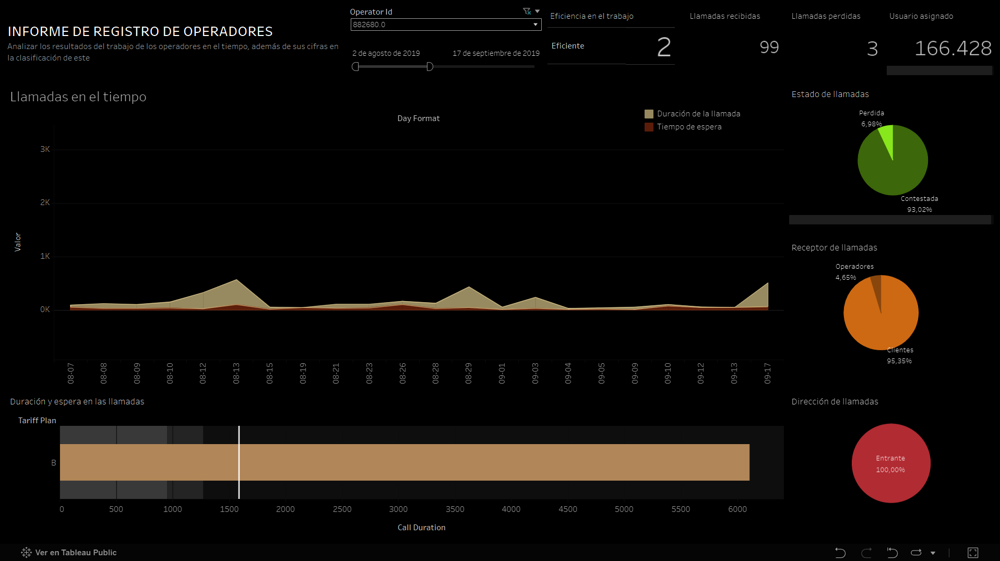
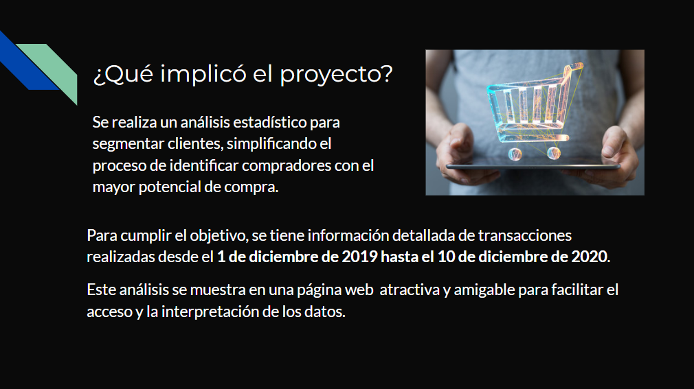
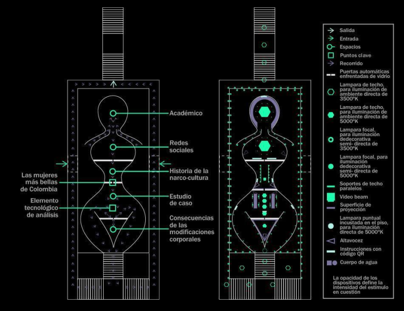

Data & Business Intelligence Analyst UX-Oriented Problem Solver Process Optimization & Insight Generation
Data Analyst with a background in industrial design, specialized in Business Intelligence and Data Visualization. My approach blends structured thinking, visual sensitivity, and strategic analysis to transform complex data into clear, actionable decisions. I work with tools like Python, SQL, Tableau, and Power BI to design solutions that align data with business goals.

Optimizing inbound and outbound call management by identifying less efficient operators.

Development of a predictive model to identify customers with the highest purchase potential.

Analysis of the transformations of the Colombian female body through technology in 21st-century narco-culture.